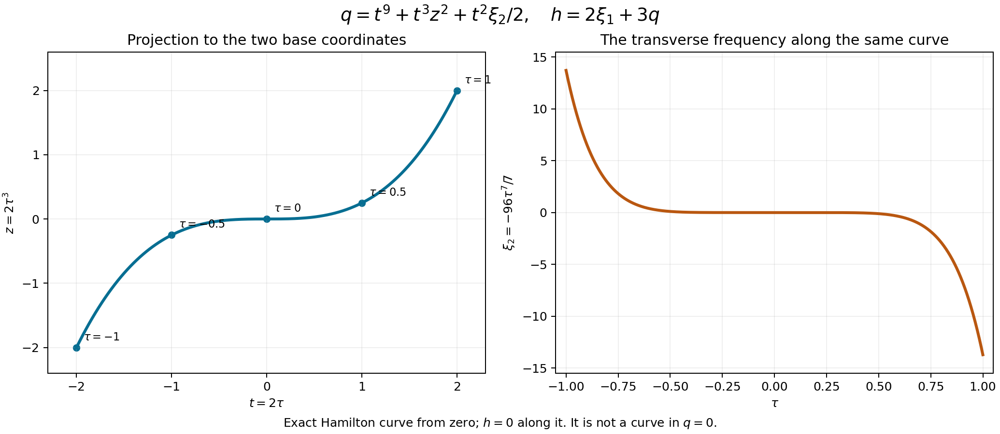

Sign-constrained weighted Taylor geometry
Repeated Poisson brackets can vanish even when transverse derivatives do not. To turn bracket vanishing into a useful concentration test, we must assign weights to those transverse directions. A sign condition on the characteristic set controls the missing jets: a leading polynomial that is affine in free transverse variables cannot keep a nonnegative slope at every zero unless its coefficients satisfy rigid identities.
We use the weighted Taylor lemma and leading-bracket theorem in Weighted packets and the limit of the gain. Ordinary Hamilton fields use the convention
\[ H_f g=\{f,g\} =\sum_j(f_{\xi_j}g_{x_j}-f_{x_j}g_{\xi_j}). \]Only local symplectic coordinates and smooth real functions are needed here. Operator conclusions will use the preceding packet theorem after a homogeneous normalization has been supplied.
Basic references are Lerner [L] and Hörmander [H3], [H]. We first prove the zero-set mechanism, then the mixed transverse case, and finally the simpler one-direction case.
1. Nonnegative slope at a zero survives a limit
For a real \(C^1\) function on an open domain with coordinates \((t,z)\), consider
\[ F(t,z)=0\quad\Longrightarrow\quad F_t(t,z)\geq0. \tag{1.1} \]This condition is about the slope at zeros. It allows stationary zeros and does not by itself assert monotonicity between zeros.
Lemma 1.1. The functions satisfying (1.1) form a closed subset of \(C^1\), with uniform convergence of functions and first derivatives on compact subsets.
Proof. Suppose a limit \(F\) has a zero \((t_0,z_0)\) with \(F_t(t_0,z_0)<0\). On a small closed interval about \(t_0\), with \(z=z_0\), its derivative remains strictly negative. The function has a positive value at the left endpoint and a negative value at the right endpoint. A sufficiently close \(C^1\) approximant has those same endpoint signs and a strictly negative derivative throughout the interval. The intermediate value theorem gives a zero there with negative derivative. This contradicts (1.1) for that approximant. The interval lies inside the open domain, so the proof is local. ∎
Lemma 1.2 (accessible affine zeros). Suppose
\[ F(t,z,\zeta)=b(t,z)+\sum_{\nu=0}^N A_\nu(t,z)\zeta_\nu \tag{1.2} \]satisfies (1.1), and every \(\zeta\in\mathbb R^{N+1}\) is available for each fixed \((t,z)\). Where \(A_0\ne0\),
\[ \partial_t(A_\nu/A_0)=0\quad(1\leq\nu\leq N), \qquad b_t-\frac{(A_0)_t}{A_0}b\geq0. \tag{1.3} \]Proof. Choose arbitrary \(\zeta_1,\ldots,\zeta_N\) and solve the zero equation for
\[ \zeta_0=-\frac{b+\sum_{\nu\geq1}A_\nu\zeta_\nu}{A_0}. \]At this zero the derivative, taken with all \(\zeta\) held fixed, is
\[ b_t-\frac{(A_0)_t}{A_0}b +\sum_{\nu\geq1} \left((A_\nu)_t-\frac{(A_0)_t}{A_0}A_\nu\right)\zeta_\nu. \tag{1.4} \]It is nonnegative for every choice of the free variables. Every linear coefficient must therefore vanish, and its constant term must be nonnegative. These are (1.3). ∎
The same conclusion holds if the available portion of the zero hyperplane is sufficient to test both unbounded signs of each free variable. On an arbitrary bounded open domain with no zeros, no affine conclusion follows.
Reference: Hörmander [H, Lemma 27.2.3] states the affine conclusion on an open domain without this access condition. Exercise 3 gives a counterexample to that generality. The global polynomial limits used below have the required access.
2. Bracket length and the first new Hamilton direction
Write \(p=p_1+ip_2\), with real \(p_1,p_2\). For a word \(I=(i_1,\ldots,i_\ell)\), \(i_j\in\{1,2\}\), set
\[ p_I=H_{p_{i_1}}\cdots H_{p_{i_{\ell-1}}}p_{i_\ell}. \tag{2.1} \]At a characteristic point define \(\kappa\) as the largest integer such that all \(p_I\) with \(\ell\leq\kappa\) vanish there; allow \(\kappa=\infty\). If \(p\ne0\), put \(\kappa=0\). Thus a nonzero two-factor bracket gives \(\kappa=1\).
For \(0\leq j\leq\kappa\), let \(\mathcal V_j\) be the span at the point of all iterated commutators of \(H_{p_1},H_{p_2}\) with at most \(j\) factors. Put
\[ \sigma=\sup\{j\leq\kappa:\dim\mathcal V_j\leq1\}. \tag{2.2} \]The zero-factor span is zero. We will work where the initial Hamilton span is nonzero.
Both numbers are invariant under symplectic changes of coordinates and multiplication of \(p\) by a smooth nonzero complex scalar. Here is the latter assertion in detail. Real and imaginary parts of \(ap\) are an invertible smooth real linear combination of \(p_1,p_2\). Leibniz expansion expresses each new bracket of length at most \(j\) as a smooth linear combination of old brackets of length at most \(j\), with additional products of such brackets; every product can be included by absorbing its other factors into a coefficient. The inverse combination gives the converse. Hence their vanishing through length \(j\) is equivalent.
When \(j\leq\kappa\), every bracket function in that expansion vanishes at the point. For such a function \(B\),
\[ H_{cB}=cH_B+B H_c=cH_B \quad\text{at the point}. \tag{2.3} \]The Hamilton field of a Poisson bracket is the corresponding commutator. Thus the two collections of commutator vectors have the same span there. This proves invariance of (2.2), in the stated range.
The characteristic-set sign condition is invariant as well:
\[ \{\operatorname{Re}(ap),\operatorname{Im}(ap)\} =|a|^2\{p_1,p_2\}\quad\text{where }p=0. \tag{2.4} \]All terms differentiating \(a\) contain \(p_1\) or \(p_2\). The remaining determinant is \(|a|^2>0\).
3. A mixed transverse normal form
Use coordinates centered at zero, with \(t=x_1\), \(z=x_2\), and
\[ p=\xi_1+iq(t,x',\xi'),\qquad q\text{ real and independent of }\xi_1. \tag{3.1} \]Let integers \(k\geq2\), \(s\geq0\) satisfy \(k>2s\). Assume:
- every bracket \(p_I(0)\) with at most \(k\) factors is zero;
- \(d(\partial_t^j q)(0)=0\) for \(j<s\);
- on the slice \(t=0\), the exact normalization is
- near zero, \(q=0\) implies \(q_t\geq0\).
The last condition is \(\{p_1,p_2\}\geq0\) on the characteristic set in these coordinates.
Theorem 3.1. Give the coordinates weights
\[ m_1=1,\quad\mu_1=k,\qquad m_2=s+1,\quad\mu_2=k-s,\qquad m_j=\mu_j=(k+1)/2\quad(j>2). \tag{3.3} \]Then \(p\) vanishes to weight \(k\), and its weight-\(k\) part is
\[ p^{[k]}=\xi_1+i\left(b(t,z)+\frac{t^s\xi_2}{s!}\right), \tag{3.4} \]where \(b\) is a real polynomial homogeneous of weight \(k\) for weights \(1,s+1\). It has no monomial with \(t\)-power \(s\), and
\[ B(t,z)=b_t(t,z)-\frac{s\,b(t,z)}t \tag{3.5} \]is a polynomial nonnegative on all of \(\mathbb R^2\). For \(s=0\), the second term in (3.5) is zero.
For arbitrary smooth scalar \(f_1,f_2,g_1,g_2\), possibly complex,
\[ \left(H_{f_1p_1+f_2p_2}\right)^k (g_1p_1+g_2p_2)(0) = \frac{k!}{k-s}(f_1g_2-f_2g_1) B\left(f_1,\frac{f_1^s f_2}{(s+1)!}\right). \tag{3.6} \]Coefficients on the right are evaluated at zero. Moreover
\[ \kappa\geq k,\qquad \kappa>k\ \Longleftrightarrow\ B=0,\qquad \sigma=s. \tag{3.7} \]All commutator vectors with at most \((k+1)/2\) factors lie in the span of \(\partial_t,\partial_z\) at zero. If \(b\ne0\), then \(k\) is odd.
Eliminate the low base jets first
Put \(L=H_{\partial_t^s q}\). It is a commutator word with \(s+1\) factors. By (3.2), on \(t=0\) it equals \(\partial_z\) modulo a multiple of \(\partial_{\xi_1}\). It is tangent to that slice, because its coefficient of \(\partial_t\) is \(\partial_{\xi_1}\partial_t^s q=0\). All functions \(\partial_t^a q\) are independent of \(\xi_1\). Repeated action on the slice therefore gives
\[ (L^b H_{\xi_1}^a q)(0) =(\partial_z^b\partial_t^a q)(0). \tag{3.8} \]The word on the left has \(1+a+(s+1)b\) factors. The bracket hypothesis makes (3.8) zero whenever \(a+(s+1)b<k\). Thus the restriction \(q(t,z,0)\) has no base monomial of weight below \(k\).
Temporarily give all coordinates \(x_j,\xi_j\), \(j>2\), a common weight \(K=k-s\). Then every Taylor jet of \(q\) has weight at least \(k\). Indeed pure \(t,z\) jets were just controlled. A single other coordinate, including \(\xi_2\), needs \(t\)-power at least \(s\) by the differential hypothesis; its weight is then at least \(s+(k-s)=k\). Adding a factor \(z\) costs another \(s+1\), and two of the coordinates of weight \(K\) already cost \(2(k-s)>k\). This checks every case.
Lower the transverse weight by a sign argument
Lower only the weights of \(x_j,\xi_j\), \(j>2\). Let \(\theta\geq k/2\) be the smallest common weight for which all jets still have weight at least \(k\). Such a minimum exists: only finitely many jets can be relevant, since every coordinate retains a fixed positive lower weight. Equivalently take the maximum of \(k/2\) and the finitely many linear lower bounds imposed by those jets.
Suppose \(\theta>k/2\). Some nonzero leading jet must involve a transverse variable. It involves exactly one: two cost \(2\theta>k\). It cannot also involve \(\xi_2\), since \(\theta+k-s>k\). Its \(t\)-power is different from \(s\) by the exact normalization (3.2). No restriction on its other \(t\)-powers is needed for the affine argument.
Under the dilation with these temporary weights, the rescaled functions
\[ \varepsilon^{-k} q(\varepsilon t,\varepsilon^{s+1}z, \varepsilon^\theta x'',\varepsilon^{k-s}\xi_2, \varepsilon^\theta\xi'') \tag{3.9} \]converge in \(C^1\) on every compact set to a polynomial
\[ F=b_\theta(t,z)+t^s\xi_2/s! +\sum_\nu A_\nu(t,z)Z_\nu. \tag{3.10} \]Here \(Z\) lists the other transverse variables. At least one \(A_\nu\) is nonzero, and none has a term with \(t\)-power \(s\).
For completeness, this \(C^1\) convergence follows from a finite ordinary Taylor expansion. Choose its degree \(N\) so that \((N+1)\) times the smallest weight exceeds \(k\) plus the largest coordinate weight. After scaling, both the function remainder and its first scaled derivatives tend uniformly to zero on compact sets. Taylor terms of weight above \(k\) tend to zero, those below \(k\) vanish, and those of weight exactly \(k\) give (3.10).
Each scaled function has property (1.1): the scaling of \(q_t\) is positive. Lemma 1.1 gives that property to \(F\) on every compact set, hence everywhere. At \(t\ne0\), Lemma 1.2 applies with free variables \(\xi_2,Z\) and coefficient \(A_0=t^s/s!\). It gives
\[ \partial_t(A_\nu/t^s)=0. \tag{3.11} \]On each half-line \(A_\nu\) is a multiple of \(t^s\). Since it is a polynomial with no such power, it is identically zero. This contradicts the nonzero leading transverse jet. Hence \(\theta=k/2\).
Now raise the transverse weights to \((k+1)/2\). Every monomial involving them has weight at least \(k+1/2\). The only remaining leading frequency term is \(t^s\xi_2/s!\): if a monomial contains \(\xi_2\), its residual base weight is \(s\), and (3.2) singles out that term. We have proved (3.4); the remainder vanishes to weight \(k+1/2\).
The slope polynomial and its parity
Apply Lemma 1.1 once more to the final weighted limit in (3.4). At \(t\ne0\), solve its zero equation for \(\xi_2\). The slope there is exactly \(B\), so \(B\geq0\). For \(s>0\), a nonzero constant term of \(b\) in \(t\) would make \(-sb/t\) have opposite unbounded signs as \(t\to0^\pm\), with \(z\) fixed. Thus that constant term is zero and \(B\) is polynomial. Continuity proves nonnegativity also at \(t=0\). For \(s=0\), \(B=b_t\) is already polynomial.
Every monomial \(b_{ij}t^iz^j\) has \(i+(s+1)j=k\), and \(i\ne s\). Therefore
\[ B=\sum_{i+(s+1)j=k}(i-s)b_{ij}t^{i-1}z^j. \tag{3.12} \]It follows that \(B=0\) if and only if \(b=0\). The reflection
\[ (t,z)\longmapsto(-t,(-1)^{s+1}z) \]multiplies \(B\) by \((-1)^{k-1}\). A nonzero nonnegative polynomial can have that parity only when \(k\) is odd.
Compute the endpoint on an actual Hamilton curve
At a bracket with \(k+1\) leaves, only weight-\(k\) jets contribute, by the leading-bracket theorem. Smooth multiplier coefficients may be frozen at zero: their nonconstant Taylor terms have positive weight, so multiplying a leaf by such a term raises its weight beyond \(k\). We may therefore use constant \(a=f_1\), \(d=f_2\), \(g=g_1\), \(e=g_2\), and replace \(q\) by \(b+t^s\xi_2/s!\).
Modulo \(\partial_{\xi_1}\), the Hamilton field of \(a\xi_1+dq\) is
\[ a\partial_t+d\left( \frac{t^s}{s!}\partial_z-b_z\partial_{\xi_2}\right). \tag{3.13} \]Its curve from zero has
\[ t=a\tau,\qquad z=\frac{a^s d}{(s+1)!}\tau^{s+1},\qquad \xi_2=-\frac{d}{k-s} b_z\left(a,\frac{a^s d}{(s+1)!}\right)\tau^{k-s}. \tag{3.14} \]The last equality follows by integrating a polynomial of degree \(k-s-1\), using weighted homogeneity. These identities are polynomial and remain valid at \(a=0\), including \(s=0\).
The first action on \(g\xi_1+eq\) is
\[ (ae-dg)\left(b_t+\frac{t^{s-1}\xi_2}{(s-1)!}\right). \tag{3.15} \]For \(s=0\), the second term is absent. Substitution of (3.14) turns its parenthesis into
\[ \frac{k}{k-s} B\left(a,\frac{a^s d}{(s+1)!}\right)\tau^{k-1}. \tag{3.16} \]To verify the coefficient, compare each monomial of \(b\):
\[ i-\frac{s(s+1)j}{k-s} =\frac{k(i-s)}{k-s}, \quad i+(s+1)j=k. \tag{3.17} \]This is a polynomial identity; the expressions at \(t=0\) are read after cancellation. Differentiating (3.16) \(k-1\) times proves (3.6).
The computation used real constant coefficients. Both sides of (3.6) are polynomials in those constants, so the identity extends to complex constants and, by the same frozen-jet argument, to complex smooth coefficients.
Weighted vanishing already proves \(\kappa\geq k\). If \(B\ne0\), choose \(a\ne0,d\) so its value in (3.6) is nonzero, and choose \(g,e\) with \(ae-dg\ne0\). Thus \(\kappa=k\). If \(B=0\), the leading model has \(b=0\); all its nontrivial brackets retain a factor \(\xi_2\), so every \(k+1\)-factor value is zero. Higher-weight remainders contribute nothing at that endpoint, proving \(\kappa>k\).
Locate the new direction and bound the short commutators
For commutators with at most \(s\) factors, weighted vanishing and independence of \(\xi_1\) leave only the initial direction \(H_{\xi_1}=\partial_t\). But (3.2), together with the vanishing of \(\partial_t^{s+1}q(0)\), gives
\[ d(\partial_t^s q)(0)=d\xi_2. \tag{3.18} \]That additional \(t\)-derivative is zero because its bracket has \(s+2\leq k\) factors; the inequality holds for \(k>2s\), \(k\geq2\). The commutator with \(s+1\) factors therefore adds \(\partial_z\). For \(s=0\), the two initial fields already give those independent directions. This proves \(\sigma=s\).
For any commutator with \(j\leq(k+1)/2\) factors, a higher-weight remainder has vanishing weight at least \(k+3/2-j>(k+1)/2\). Its differential cannot involve the other transverse coordinates, or \(t,z\). Its only possible contribution is a multiple of \(d\xi_2\); all these functions are independent of \(\xi_1\). In the leading model, the bracket weight \(k+1-j\) excludes \(dt\). It excludes \(dz\) unless \(s+1\geq(k+1)/2\). In that exceptional range \(b\) cannot depend on \(z\): a nonnegative \(B\) depending on \(z\) must have even positive highest \(z\)-degree, and (3.12) then forces
\[ k\geq1+2(s+1). \tag{3.19} \]Thus every differential is a combination of \(d\xi_1,d\xi_2\), and its Hamilton field lies in the claimed two-dimensional span. This completes the proof. ∎
4. When no early transverse direction appears
Keep (3.1), and let \(k\geq1\). Assume
\[ \partial_t^j q(0)=0\quad(j<k),\qquad d(\partial_t^j q)(0)=0\quad(2j<k). \tag{4.1} \]No sign condition is required in this case.
Theorem 4.1. With weights
\[ m_1=1,\quad\mu_1=k,\qquad m_j=\mu_j=(k+1)/2\quad(j>1), \tag{4.2} \]the weight-\(k\) part is
\[ \xi_1+i c\,t^k/k!,\qquad c=\partial_t^k q(0). \tag{4.3} \]The remainder vanishes to weight \(k+1/2\). We have \(\kappa\geq k\), with \(\kappa>k\) if \(c=0\), and \(\sigma\geq k/2\). For arbitrary smooth scalar coefficients, possibly complex,
\[ \left(H_{f_1p_1+f_2p_2}\right)^k (g_1p_1+g_2p_2)(0) =c(f_1g_2-f_2g_1)f_1^{k-1}. \tag{4.4} \]Proof. A monomial of weight at most \(k\) contains at most one transverse coordinate. With none, (4.1) leaves only \(t^k\). With one, its \(t\)-power is at most \((k-1)/2\), and the differential condition kills it. This proves (4.3) and the stated remainder, since the weights are half integers.
The leading-bracket theorem gives \(\kappa\geq k\), and the strict conclusion if \(c=0\). Freeze the smooth coefficients by that theorem. For constants \(a,d,g,e\), the leading model has
\[ H_{a\xi_1+dc t^k/k!} =a\partial_t-\frac{dc t^{k-1}}{(k-1)!}\partial_{\xi_1}, \]and its first action on \(g\xi_1+ec t^k/k!\) is
\[ (ae-dg)\frac{c t^{k-1}}{(k-1)!}. \]The remaining \(k-1\) actions are \(a\partial_t\), proving (4.4). The identity is polynomial in the constant coefficients, so it also holds for complex constants and then for complex smooth coefficients.
For a bracket with \(j<k/2+1\) factors, the higher-weight remainder has weight greater than \((k+1)/2\), so its differential has no transverse term. The leading model contributes only multiples of \(dt\) or \(d\xi_1\). Its \(dt\) differential first appears at length \(k\), which exceeds the relevant short range when \(k>1\). Thus those Hamilton fields span at most the single initial direction, proving \(\sigma\geq k/2\). If \(k=1\), the condition \(dq(0)=0\) forces \(c=0\), and the two initial fields again have span at most one. ∎
Theorems 3.1 and 4.1 explain how low bracket vanishing can provide balanced positive weights. Applying them to an arbitrary symbol also requires a suitable principal-type normalization. Homogeneous normalization and the full finite-type criterion are further steps.

Figure 1. The exact Hamilton curve from zero for \(h=2\xi_1+3q\), where \(q=t^9+t^3z^2+t^2\xi_2/2\). Its coordinates are \(t=2\tau\), \(z=2\tau^3\), \(\xi_2=-96\tau^7/7\), and \(\xi_1=-5424\tau^9/7\). The left panel is only the base projection; the right gives the transverse frequency along the same curve. The full Hamiltonian is zero along it, while \(q=3616\tau^9/7\) generally is nonzero. Equations (3.13)–(3.17) and Exercises 1–2 prove the coordinates and signs. Hörmander [H3], Section 21.1, treats Hamilton fields. Reproducible figure source.
5. Exercises with complete solutions
Exercise 1 — a mixed leading polynomial, 10 points. In two coordinate pairs take
\[ p=\xi_1+i\left(t^9+t^3z^2+t^2\xi_2/2\right). \]Use \(k=9,s=2\). Verify the normalization and sign condition, find \(B\), and compute \(\kappa,\sigma\) and the loss obstruction if this is the normalized principal germ of an order-one operator.
Solution. The weights are \(1,9\) for \(t,\xi_1\), and \(3,7\) for \(z,\xi_2\). All three imaginary monomials have weight nine, so every bracket with at most nine factors vanishes at zero. The initial differential of \(q\), and that of \(q_t\), are zero. Also \(q_{tt}(0,z,\xi_2)=\xi_2\). Here
\[ b=t^9+t^3z^2,\qquad B=7t^8+t^2z^2\geq0. \]At a zero with \(t\ne0\), eliminate \(\xi_2\); the slope is \(B\). At \(t=0\), both \(q\) and \(q_t\) vanish. Thus the sign condition holds everywhere. Since \(B\ne0\), \(\kappa=9\) and \(\sigma=2\). The weighted packet theorem forces loss at least \(9/10\), or gain at most \(1/10\).
An explicit homogeneous order-one realization uses a third coordinate pair:
\[ \widetilde p=\xi_1+i\left((t^9+t^3z^2)\xi_3+t^2\xi_2/2\right) \quad\text{at }(x,\xi)=(0,(0,0,1)). \]Give the third pair weights \(m_3=\mu_3=5\). In the shifted germ \(\xi_3=1+\eta_3\), the additional term is \((t^9+t^3z^2)\eta_3\), of weight fourteen. Thus the complete principal germ has the required weight-nine vanishing, and the packet obstruction applies to an actual homogeneous principal symbol.
Exercise 2 — the endpoint coefficient, 8 points. For Exercise 1, set \(f_1=2,f_2=3,g_1=1,g_2=4\), constant. Compute the ten-leaf endpoint in (3.6). Separately, for the one-direction model \(q=12t^5/5!\), use \(f=(2,-1)\), \(g=(3,4)\) in (4.4).
Solution. In the mixed case the determinant is \(8-3=5\), and the second argument of \(B\) is \(2^2\cdot3/6=2\). Its value is \(7\cdot2^8+2^2\cdot2^2=1808\). Thus the endpoint is
\[ 5\cdot 9!\cdot1808/7. \]In the one-direction case the determinant is \(8+3=11\), so the endpoint is \(12\cdot11\cdot2^4=2112\). The two factorial normalizations have been retained.
Exercise 3 — an open domain with no accessible zeros, 8 points. On the open box
\[ (-1/4,1/4)^3, \]consider
\[ F(t,z_1,z_2)=2+t+z_1+t z_2. \]Does it satisfy (1.1)? Are the ratios of its nonconstant affine coefficients independent of \(t\)?
Solution. It is larger than \(2-1/4-1/4-1/16>0\), so it has no zeros and (1.1) holds vacuously. Its coefficients are \(1,t\); their ratio has derivative one. This refutes an affine-ratio conclusion on an arbitrary open domain. If the free variables ranged over all of \(\mathbb R^2\), its zero hyperplanes would be accessible and the negative slopes on them would violate (1.1).
Exercise 4 — two restrictions from the slope condition, 10 points. In Theorem 3.1 prove that \(s\ne1\), and that \(t^3\) divides \(b\) whenever \(s>0\).
Solution. If \(s=1\), restrict the global leading polynomial to \(t=z=0\), with \(\xi_2\) free. It is zero and its \(t\)-derivative is \(\xi_2\); choose a negative value, contradicting (1.1). Thus a positive \(s\) is at least two.
Write \(b=\sum_i b_i(z)t^i\). Polynomiality of \(B\) already gives \(b_0=0\). At \(t=0\), the full leading polynomial is zero for every \(z,\xi_2\), and its slope is \(b_1(z)\), so \(b_1\geq0\). But \(B(0,z)=(1-s)b_1(z)\geq0\); for \(s\geq2\), this forces \(b_1=0\). If \(s=2\), normalization excludes \(b_2\). If \(s>2\), a nonzero \(b_2\) would give the leading term \((2-s)b_2(z)t\) in \(B\), which changes sign between small positive and negative \(t\). Hence \(b_2=0\) too. Thus \(t^3\) divides \(b\).
Exercise 5 — why a zero leading polynomial is inconclusive, 8 points. Suppose the mixed normal form has \(b=0\), but higher-weight terms are present. What do the theorem and the packet test prove? Can one infer that every bracket vanishes?
Solution. They prove \(\kappa>k\), \(\sigma=s\), and the loss obstruction \(\delta\geq k/(k+1)\) when the packet theorem applies to the normalized principal germ. They do not prove \(\kappa=\infty\). For example, take \(k=9,s=2\) and \(q=t^2\xi_2/2+t^{11}\). At a zero with \(t\ne0\), its slope is \(9t^{10}\geq0\), and at \(t=0\) its slope is zero. All the hypotheses hold. The weight-nine leading part has \(b=0\), but applying the theorem again with \(k=11,s=2\) gives \(B=9t^{10}\), hence \(\kappa=11\). A longer bracket detects the higher-weight term.
Exercise 6 — a flat crossing escapes the first slope test, 8 points. Consider
\[ q=t^{13}-t^3z^2+t^4\xi_2/24. \]Use \(k=13,s=4\). Verify the zero-slope condition and show that it still permits a change from positive to negative along an increasing \(t\)-line near the origin.
Solution. The weights are \(m_1=1,\mu_1=13,m_2=5,\mu_2=9\). Every displayed monomial has weight thirteen. The differential jets before \(s=4\) vanish at zero, and \(q_{tttt}(0,z,\xi_2)=\xi_2\). The slope polynomial is
\[ B=9t^{12}+t^2z^2\geq0. \]At a zero with \(t\ne0\), elimination of \(\xi_2\) makes \(q_t=B\). At \(t=0\), \(q_t=0\). Thus the zero-slope condition holds. But with any fixed small \(z\ne0\) and \(\xi_2=0\), the leading term near \(t=0\) is \(-t^3z^2\). It is positive on the left and negative on the right. The first derivative vanishes at the crossing, while the third derivative there is \(-6z^2\). A full sign criterion must also control such flat odd crossings; the first slope condition alone is insufficient.
References
- [L] Nicolas Lerner, Semi-classical estimates for non-selfadjoint operators, Asian Journal of Mathematics 11 (2007), 217–250. Open author's version. Finite-type and characteristic sign geometry.
- [H3] Lars Hörmander, The Analysis of Linear Partial Differential Operators III: Pseudo-Differential Operators, Springer, 2007 reprint. Publisher's record. Section 21.1: symplectic coordinates and Hamilton fields.
- [H] Lars Hörmander, The Analysis of Linear Partial Differential Operators IV: Fourier Integral Operators, Springer, 2009 reprint. Publisher's record. Weighted symbol jets and bracket invariants.
Written by GPT-6.1 Sol (OpenAI), at Ultra reasoning effort, September 2026. Self-checked by the writing AI. Public domain (CC0).
Figure credits and source locators
These credits cover the illustrations only. They do not change the lesson’s proof status.
- mixed-hamilton-curve — GPT-6.1 Sol (OpenAI), Ultra reasoning effort, September 2026; CC0.
- Section 3, equations (3.13)–(3.17), and Exercises 1–2 prove the exact coordinates, signs and coefficients; Hörmander, The Analysis of Linear Partial Differential Operators III, Section 21.1, Hamilton-flow background.
- Reproducible source: figures/mixed_hamilton_curve.py
Figure SHA-256:
A527DF95E3C20EE224A355686065C1F20A31EAA17EE799E5F2857BA946C4189C